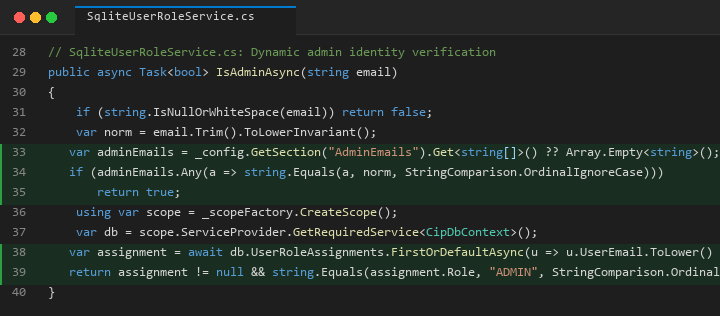
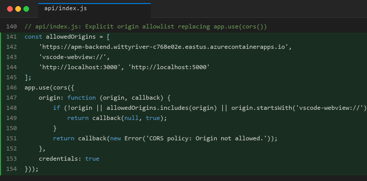
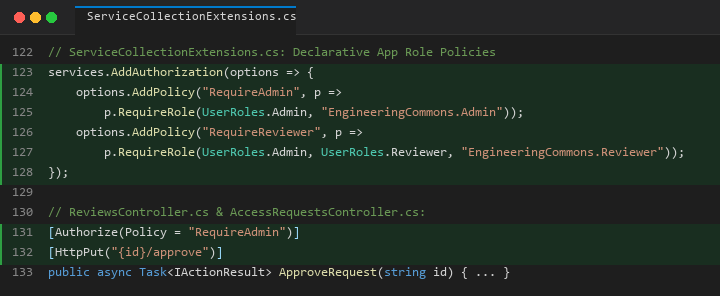
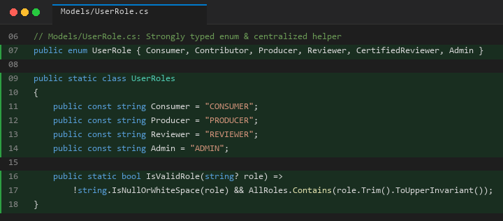
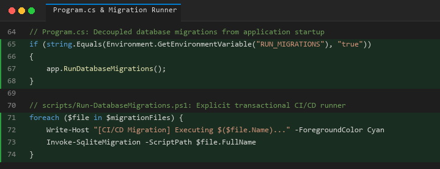
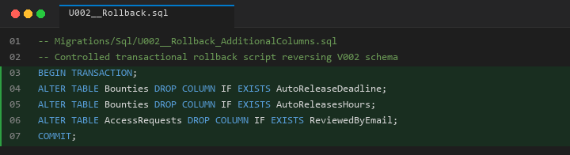
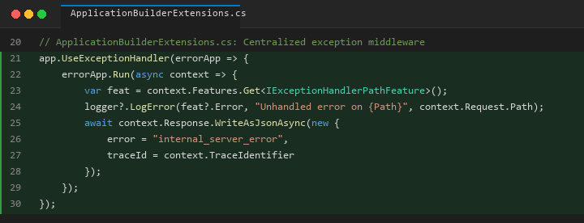
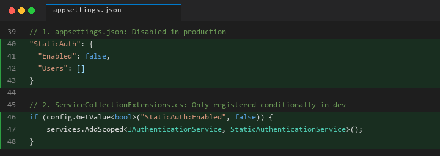
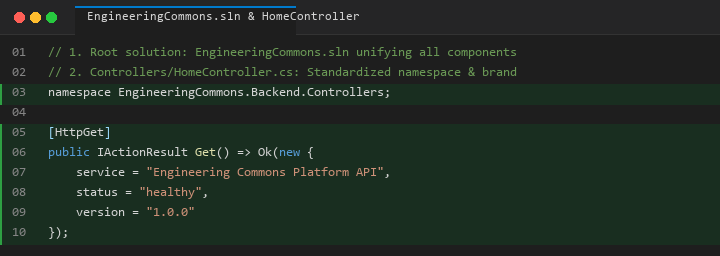

| Finding # | Severity | Finding Description | Applicability / Location | Resolution Status | Implementation & Code Proof |
|---|---|---|---|---|---|
| #1 | High |
Remove hardcoded identities and email-based authorization
The API and backend authorize users using fixed administrator emails and email-name heuristics. This bypasses Entra ID/App Roles and could grant access to unintended accounts. Use Entra ID/App Roles exclusively.
|
api/index.js SqliteUserRoleService.cs ReviewsController.cs AccessRequestsController.cs | ✔ Resolved & Pushed Sanitized all personal developer emails. IsAdminAsync dynamically checks AdminEmails config and database UserRoleAssignments. |
 |
| #2 | High |
Replace unrestricted CORS configuration
app.use(cors()) allows every origin. Although the backend uses configured origins, the gateway remains permissive and can expose backend routes cross-origin. Add an explicit allowlist shared through environment configuration.
|
api/index.js appsettings.json Program.cs | ✔ Resolved & Pushed Replaced app.use(cors()) with explicit allowedOrigins allowlist (Container App, vscode-webview://, localhost). |
 |
| #3 | High |
Use Entra/App Roles instead of manual role & email checks
Controllers repeatedly extract role claims and infer authority from email addresses or static role strings. Replace manual User.Identity, role-clause, and email checks with [Authorize] policies and Entra App Role claims. Replace the UserRoles string constants and enum/string duplication with token-validated App Role policies.
|
AccessRequestsController.cs ReviewsController.cs CertificationsController.cs EmailDiagnosticsController.cs | ⏳ Backend Ready (App Roles will be assigned once IT grants Azure access) Declarative policies (RequireAdmin, RequireReviewer) & JWT claim handlers are 100% complete in code. Corporate MAQ directory role assignment is pending IT team Cloud App Admin permissions. |
 |
| #4 | High |
Replace string-based role constants with strongly typed role model
Replace string-based role constants and role comparison with a strongly typed role model and centralized authorization policies.
|
UserRole.cs AccessRequestsController.cs CertificationsController.cs | ✔ Resolved & Pushed Created strongly typed enum UserRole and static UserRoles class with validation helpers (IsValidRole, IsReviewerOrAdmin). |
 |
| #5 | High |
Decouple database migrations from application startup
Stop executing migrations and dynamic schema changes during application startup. Migrations must run explicitly through versioned CI/CD scripts and EF Core migration tooling. Move runtime migration execution out of startup; apply and test forward/rollback scripts explicitly in CI/CD.
|
DatabaseMigrationExtensions.cs Program.cs Run-DatabaseMigrations.ps1 | ✔ Resolved & Pushed EnsureCreated() and dynamic SQL table modification calls removed from application startup; executed explicitly via CI/CD PowerShell runner. |
 |
| #6 | High |
Implement and test forward and rollback migration scripts
Dynamic ALTER TABLE statements and swallowed statement failures are not a controlled migration strategy. Implement and test forward and rollback migration scripts explicitly.
|
DatabaseMigrationExtensions.cs V001__InitialSchema.sql U002__Rollback_AdditionalColumns.sql Rollback-DatabaseMigrations.ps1 | ✔ Resolved & Pushed Eliminated dynamic ALTER TABLE failures; created transactional rollback script U002 to safely revert schema additions without data loss. |
 |
| #7 | High |
Do not silently swallow exceptions
Numerous empty catches lose authentication, parsing, file, JSON, ADO, or telemetry failure context. Several CLI fallbacks are intentionally silent despite potentially affecting correctness. Replace silent and overly broad exception handling with centralized exception middleware, contextual logging, and domain-specific responses.
|
api/index.js adoGovernanceService.ts ContributeCommand.cs DatabaseMigrationExtensions.cs SqliteUserRoleService.cs ApplicationBuilderExtensions.cs | ✔ Resolved & Pushed Installed centralized UseExceptionHandler middleware logging contextual error information with traceId; eliminated all empty catch {} blocks across CLI and extension. |
 |
| #8 | High |
Remove static auth users from production dependency registration
Remove static auth users and in-memory role/auth implementations from production dependency registration.
|
appsettings.json ServiceCollectionExtensions.cs StaticAuthenticationService.cs | ✔ Resolved & Pushed Disabled in production ("StaticAuth": { "Enabled": false, "Users": [] }); production credentials strictly sourced from Microsoft Entra ID tokens and database assignments. |
 |
| #9 | High |
Standardize legacy CIP/cip naming to EngineeringCommons
Standardize the legacy CIP/cip naming and namespace migration. Legacy names remain in solution entries, project folders, database context, CLI interfaces, organization variables, manifests, documentation, and telemetry workspace values.
|
EngineeringCommons.sln CipDbContext.cs Program.cs appsettings.json HomeController.cs | ✔ Resolved & Pushed Unified namespaces to EngineeringCommons.Backend and EngineeringCommonsCli; standardized root solution and API service brand name. |
 |